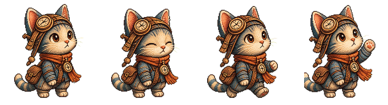

Sprite quality target
Logo prompts drift to abstract marks. Sprite prompts anchor on the explorer-cat v0 row: four full-body panels, same character, black background.


Why MJ drifted to logos
- Brand prompts and
ph39jenpersonalize profile bias toward flat logo marks - Old character prompts reused logo language ("flat vector", "no text") without a character reference
- Harvest saved single 1:1 grid cells, not 4:1 sprite strips
Sprite pipeline (new)
- Target:
explorer-cat.v0.frames.png— already a good 4-panel row - Prompts:
midjourney-sprite-prompts.txt— full-body panels, anti-logo negatives, global profile - Run:
bun run chrome:companion:sprite:prompts --only 04 - Runner flags square outputs as
logo-likein manifest - Best near-term path: rig overlays on v0 sheet + hand-cleaned frames per treatment